위험물산업기사 (2018-09-15 기출문제)
1과목: 일반화학
1. 물 450g에 NaOH 80g이 녹아 있는 용액에서 NaOH의 몰분율은? (단, Na의 원자량은 23 이다.)
- 0.074
- 0.178
- 0.200
- 0.450
(정답률: 66%)

2. 다음 할로젠족 분자 중 수소와의 반응성이 가장 높은 것은?
- Br2
- F2
- Cl2
- I2
(정답률: 74%)
3. 1몰의 질소와 3몰의 수소를 촉매와 같이 용기 속에 밀폐하고 일정한 온도로 유지하였더니 반응물질의 50%가 암모니아로 변하였다. 이때의 압력은 최초 압력의 몇 배가 되는가? (단, 용기의 부피는 변하지 않는다.)
- 0.5
- 0.75
- 1.25
- 변하지 않는다.
(정답률: 61%)
4. 다음 pH 값에서 알칼리성이 가장 큰 것은?
- pH = 1
- pH = 6
- pH = 8
- pH = 13
(정답률: 91%)
5. 다음 화합물 가운데 환원성이 없는 것은?
- 젖당
- 과당
- 설탕
- 엿당
(정답률: 85%)
6. 주기율표에서 제2주기에 있는 원소 성질 중 왼쪽에서 오른쪽으로 갈수록 감소하는 것은?
- 원자핵의 하전량
- 원자의 전자의 수
- 원자 반지름
- 전자껍질의 수
(정답률: 83%)
7. 95wt% 황산의 비중은 1.84 이다. 이 황산의 몰 농도는 약 얼마인가?
- 4.5
- 8.9
- 17.8
- 35.6
(정답률: 69%)
8. 우유의 pH는 25℃에서 6.4이다. 우유 속의 수소이온농도는?
- 1.98×10-7M
- 2.98×10-7M
- 3.98×10-7M
- 4.98×10-7M
(정답률: 65%)
9. 20개의 양성자와 20개의 중성자를 가지고 있는 것은?
- Zr
- Ca
- Ne
- Zn
(정답률: 82%)
10. 벤젠의 유도체인 TNT의 구조식을 옳게 나타낸 것은?
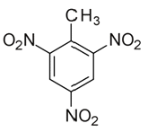
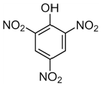
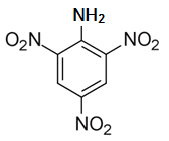
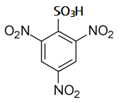
(정답률: 70%)
11. 다음 물질 중 동소체의 관계가 아닌 것은?
- 흑연과 다이아몬드
- 산소와 오존
- 수소와 중수소
- 황린과 적린
(정답률: 72%)
12. 헥산(C6H14)의 구조이성질체의 수는 몇 개인가?
- 3개
- 4개
- 5개
- 9개
(정답률: 73%)
13. 다음과 같은 반응에서 평형을 왼쪽으로 이동시킬 수 있는 조건은?
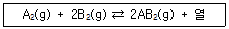
- 압력감소, 온도감소
- 압력증가, 온도증가
- 압력감소, 온도증가
- 압력증가, 온도감소
(정답률: 67%)
14. 이상기체상수 R 값이 0.082 라면 그 단위로 옳은 것은?
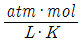
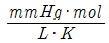
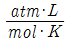
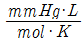
(정답률: 81%)
15. K2Cr2O7에서 Cr의 산화수는?
- +2
- +4
- +6
- +8
(정답률: 86%)
16. NaOH 1g이 250mL 메스플라스크에 녹아 있을 때 NaOH 수용액의 농도는?
- 0.1N
- 0.3N
- 0.5N
- 0.7N
(정답률: 72%)
17. 방사능 붕괴의 형태 중 22688Ra 이 α 붕괴할 때 생기는 원소는?(오류 신고가 접수된 문제입니다. 반드시 정답과 해설을 확인하시기 바랍니다.)
- 22286Rn
- 23290Th
- 23191Pa
- 23892U
(정답률: 88%)
18. pH=9인 수산화나트륨 용액 100mL 속에는 나트륨이온이 몇 개 들어 있는가? (단, 아보가드로수는 6.02×1023이다.)
- 6.02×109개
- 6.02×1017개
- 6.02×1018개
- 6.02×1021개
(정답률: 54%)
19. 다음 반응식에서 산화된 성분은?
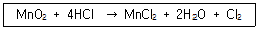
- Mn
- O
- H
- Cl
(정답률: 69%)
20. 다음 중 기하 이성질체가 존재하는 것은?
- C5H12
- CH3CH = CHCH3
- C3H7Cl
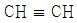
(정답률: 75%)
2과목: 화재예방과 소화방법
21. 가연물에 대한 일반적인 설명으로 옳지 않은 것은?
- 주기율표에서 0족의 원소는 가연물이 될 수 없다.
- 활성화 에너지가 작을수록 가연물이 되기 쉽다.
- 산화 반응이 완결된 산화물은 가연물이 아니다.
- 질소는 비활성 기체이므로 질소의 산화물은 존재하지 않는다.
(정답률: 75%)
22. 포소화설비의 가압송수 장치에서 압력수조의 압력 산출 시 필요 없는 것은?
- 낙차의 환산 수두압
- 배관의 마찰손실 수두압
- 노즐선의 마찰손실 수두압
- 소방용 호스의 마찰손실 수두압
(정답률: 73%)
23. 위험물안전관리법령상 제6류 위험물에 적응성이 있는 소화설비는?
- 옥외소화전설비
- 불활성가스 소화설비
- 할로겐화합물소화설비
- 분말소화설비(탄산수소염류)
(정답률: 75%)
24. 메탄올에 대한 설명으로 틀린 것은?
- 무색투명한 액체이다.
- 완전 연소하면 CO2와 H2O가 생성된다.
- 비중 값이 물보다 작다.
- 산화하면 포름산을 거쳐 최종적으로 포름알데히드가 된다.
(정답률: 72%)
25. 물을 소화약제로 사용하는 가장 큰 이유는?
- 물은 가연물과 화학적으로 결합하기 때문
- 물은 분해되어 질식성 가스를 방출하므로
- 물은 기화열이 커서 냉각 능력이 크기 떄문에
- 물은 산화성이 강하기 때문에
(정답률: 88%)
26. 위험물안전관리법령에서 정한 다음의 소화설비 중 능력단위가 가장 큰 것은?
- 팽창진주암 160L(삽 1개 포함)
- 수조 80L(소화전용물통 3개 포함)
- 마른 모래 50L(삽 1개 포함)
- 팽창질석 160L(삽 1개 포함)
(정답률: 82%)
27. “Halon 1301”에서 각 숫자가 나타내는 것을 틀리게 표시한 것은?
- 첫째자리 숫자 “1” –탄소의 수
- 둘째자리 숫자 “3” –불소의 수
- 셋째자리 숫자 “0” –요오드의 수
- 넷째자리 숫자 “1” –브롬의 수
(정답률: 80%)
28. 고체가연물의 일반적인 연소형태에 해당하지 않는 것은?
- 등심연소
- 증발연소
- 분해연소
- 표면연소
(정답률: 83%)
29. 금속분의 화재 시 주수소화를 할 수 없는 이유는?
- 산소가 발생하기 때문에
- 수소가 발생하기 때문에
- 질소가 발생하기 때문에
- 이산화탄소가 발생하기 때문에
(정답률: 82%)
30. 다음 중 제6류 위험물의 안전한 저장·취급을 위해 주의할 사항으로 가장 타당한 것은?
- 가연물과 접촉시키지 않는다.
- 0℃ 이하에서 보관한다.
- 공기와의 접촉을 피한다.
- 분해방지를 위해 금속분을 첨가하여 저장한다.
(정답률: 69%)
31. 제1종 분말소화 약제의 소화효과에 대한 설명으로 가장 거리가 먼 것은?
- 열 분해시 발생하는 이산화탄소와 수증기에 의한 질식효과
- 열 분해시 흡열반응에 의한 냉각효과
- H+ 이온에 의한 부촉매 효과
- 분말 운무에 의한 열방사의 차단효과
(정답률: 79%)
32. 표준관입시험 및 평판재하시험을 실시하여야 하는 특정옥외저장탱크의 지반의 범위는 기초의 외축이 지표면과 접하는 선의 범위 내에 있는 지반으로서 지표면으로부터 깊이 몇 m 까지로 하는가?
- 10
- 15
- 20
- 25
(정답률: 68%)
33. 위험물안전관리법령상 제2류 위험물 중 철분의 화재에 적응성이 있는 소화설비는?
- 물분무소화설비
- 포소화설비
- 탄산수소염류분말소화설비
- 할로겐화합물소화설비
(정답률: 68%)
34. 주된 소화효과가 산소공급원의 차단에 의한 소화가 아닌 것은?
- 포소화기
- 건조사
- CO2 소화기
- Halon 1211 소화기
(정답률: 69%)
35. 위험물제조소등에 설치하는 이동식 불활성가스소화설비의 소화약제 양은 하나의 노즐마다 몇 kg 이상으로 하여야 하는가?
- 30
- 50
- 60
- 90
(정답률: 51%)
36. 위험물안전관리법령상 옥외소화전설비의 옥외소화전이 3개 설치되었을 경우 수원의 수량은 몇 m3 이상이 되어야 하는가?
- 7
- 20.4
- 40.5
- 100
(정답률: 81%)
37. 알코올 화재 시 보통의 포 소화약제는 알코올형포 소화약제에 비하여 소화효과가 낮다. 그 이유로서 가장 타당한 것은?
- 소화약제와 섞이지 않아서 연소면을 확대하기 때문에
- 알코올은 포와 반응하여 가연성가스를 발생하기 때문에
- 알코올이 연료로 사용되어 불꽃의 온도가 올라가기 때문에
- 수용성 알코올로 인해 포과 파괴되기 때문에
(정답률: 81%)
38. 위험물의 취급을 주된 작업내용으로 하는 다음의 장소에 스프링클러설비를 설치할 경우 확보하여야 하는 1분당 방사밀도는 몇 L/m2 이상이어야 하는가? (단, 내화구조의 바닥 및 벽에 의하여 2개의 실로 구획되고, 각 실의 바닥면적은 500m2 이다.)
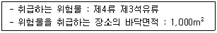
- 8.1
- 12.2
- 13.9
- 16.3
(정답률: 46%)
39. 다음 중 소화약제가 아닌 것은?
- CF3Br
- NaHCO3
- C4F10
- N2H4
(정답률: 72%)
40. 열의 전달에 있어서 열전달면적과 열전도도가 각각 2배로 증가한다면, 다른 조건이 일정한 경우 전도에 의해 전달되는 열의 양은 몇 배가 되는가?
- 0.5배
- 1배
- 2배
- 4배
(정답률: 73%)
3과목: 위험물의 성질과 취급
41. 위험물안전관리법령상 과산화수소가 제6류 위험물에 해당하는 농도 기준으로 옳은 것은?
- 36wt% 이상
- 36vol% 이상
- 1.49wt% 이상
- 1.49vol% 이상
(정답률: 78%)
42. 니트로소화합물의 성질에 관한 설명으로 옳은 것은?
- -NO 기를 가진 화합물이다.
- 니트로기를 3개 이하로 가진 화합물이다.
- -NO2 기를 가진 화합물이다.
- N=N기를 가진 화합물이다.
(정답률: 61%)
43. 동식물유의 일반적인 성질로 옳은 것은?
- 자연발화의 위험은 없지만 점화원에 의해 쉽게 인화한다.
- 대부분 비중 값이 물보다 크다.
- 인화점이 100℃보다 높은 물질이 많다.
- 요오드값이 50 이하인 건성유는 자연발화 위험이 높다.
(정답률: 62%)
44. 운반할 때 빗물의 침투를 방지하기 위하여 방수성이 있는 피복으로 덮어야 하는 위험물은?
- TNT
- 이황화탄소
- 과염소산
- 마그네슘
(정답률: 74%)
45. 연소생성물로 이산화황이 생성되지 않는 것은?
- 황린
- 삼황화린
- 오황화린
- 황
(정답률: 61%)
46. 다음 중 인화점이 가장 낮은 것은?
- 실린더유
- 가솔린
- 벤젠
- 메틸알코올
(정답률: 53%)
47. 적린의 성상에 관한 설명 중 옳은 것은?
- 물과 반응하여 고열을 발생한다.
- 공기 중에 방치하면 자연발화한다.
- 강산화제와 혼합하면 마찰 · 충격에 의해서 발화할 위험이 있다.
- 이황화탄소, 암모니아 등에 매우 잘 녹는다.
(정답률: 71%)
48. 위험물 지하탱크저장소의 탱크전용실 설치기준으로 틀린 것은?
- 철근콘크리트 구조의 벽은 두께 0.3m 이상으로 한다.
- 지하저장탱크와 탱크전용실의 안쪽과의 사이는 50cm 이상의 간격을 유지한다.
- 철근콘크리트 구조의 바닥은 두께 0.3m 이상으로 한다.
- 벽, 바닥 등에 적정한 방수 조치를 강구한다.
(정답률: 68%)
49. 제1류 위험물에 관한 설명으로 틀린 것은?
- 조해성이 있는 물질이 있다.
- 물보다 비중이 큰 물질이 많다.
- 대부분 산소를 포함하는 무기화합물이다.
- 분해하여 방출된 산소에 의해 자체 연소한다.
(정답률: 61%)
50. 탄화칼슘이 물과 반응했을 때 반응식을 옳게 나타낸 것은?
- 탄화칼슘 + 물 → 수산화칼슘 + 수소
- 탄화칼슘 + 물 → 수산화칼슘 + 아세틸렌
- 탄화칼슘 + 물 → 칼슘 + 수소
- 탄화칼슘 + 물 → 칼슘 + 아세틸렌
(정답률: 72%)
51. 제4석유류를 저장하는 옥내탱크저장소의 기준으로 옳은 것은? (단, 단층건축물에 탱크전용실을 설치하는 경우이다.)
- 옥내저장탱크의 용량은 지정수량의 40배 이하일 것
- 탱크전용실은 벽, 기둥, 바닥, 보를 내화구조로 할 것
- 탱크전용실에는 창을 설치하지 아니할 것
- 탱크전용실에 펌프설비를 설치하는 경우에는 그 주위에 0.2m 이상의 높이로 턱을 설치할 것
(정답률: 59%)
52. 위험물안전관리법령에 따른 제4류 위험물 중 제1석유류에 해당하지 않는 것은?
- 등유
- 벤젠
- 메틸에틸케톤
- 톨루엔
(정답률: 76%)
53. 다음 중 물과 반응하여 산소를 발생하는 것은?
- KClO3
- Na2O2
- KClO4
- CaC2
(정답률: 64%)
54. 벤젠에 대한 설명으로 틀린 것은?
- 물보다 비중값이 작지만, 증기비중 값은 공기보다 크다.
- 공명구조를 가지고 있는 포화탄화수소이다.
- 연소 시 검은 연기가 심하게 발생한다.
- 겨울철에 응고된 고체상태에서도 인화의 위험이 있다.
(정답률: 60%)
55. 다음 물질 중 증기비중이 가장 작은 것은?
- 이황화탄소
- 아세톤
- 아세트알데히드
- 디에틸에테르
(정답률: 47%)
56. 인화칼슘이 물 또는 염산과 반응하였을 때 공통적으로 생성되는 물질은?
- CaCl2
- Ca(OH)2
- PH3
- H2
(정답률: 67%)
57. 질산나트륨 90kg, 유황 70kg, 클로로벤젠 2,000L, 각각의 지정수량의 배수의 총합은?
- 2
- 3
- 4
- 5
(정답률: 52%)
58. 외부의 산소공급이 없어도 연소하는 물질이 아닌 것은?
- 알루미늄의 탄화물
- 과산화벤조일
- 유기과산화물
- 질산에스테르
(정답률: 64%)
59. 위험물 제조소의 배출설비의 배출능력은 1시간당 배출장소 용적의 몇 배 이상인 것으로 해야 하는가? (단, 전역방식의 경우는 제외한다.)
- 5
- 10
- 15
- 20
(정답률: 56%)
60. 위험물안전관리법령에서 정한 위험물의 지정수량으로 틀린 것은?
- 적린 : 100kg
- 황화린 : 100kg
- 마그네슘 : 100kg
- 금속분 : 500kg
(정답률: 72%)
따라서 80g의 NaOH는 몰수로 환산하면 80g / 40g/mol = 2 mol 이다.
또한, 물의 질량은 450g 이므로 물의 몰수는 450g / 18g/mol = 25 mol 이다.
따라서 NaOH의 몰분율은 2 mol / (2 mol + 25 mol) = 0.074 이다.